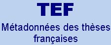
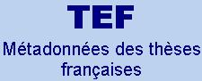

Schémas XML TEF
Le schéma tef_schemas.xsd sert de point d'entrée vers les schémas TEF, qu'ils soient propres à TEF ou externes (METS, METSRights, DC, DCTERMS, MADS). | ||||
 |
Schémas XML TEF
Le schéma tef_schemas.xsd sert de point d'entrée vers les schémas TEF, qu'ils soient propres à TEF ou externes (METS, METSRights, DC, DCTERMS, MADS). | ||||
 |
![[Note]](graphics/note.gif)